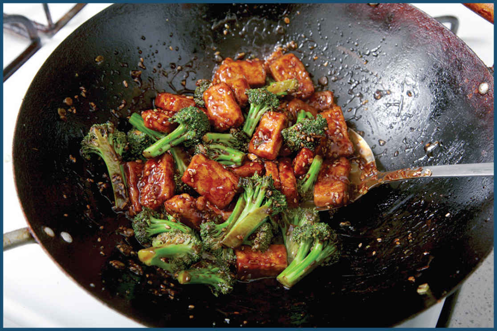

CRISPY-AND-SAUCY DEEP-FRIED TOFU

There are some days when you lounge around in your pajamas on the couch, others where nary a piece of fabric girds your loins from dawn to dusk, and still others where a heavy winter coat and a pair of long johns are appropriate. Similarly, sometimes your fried tofu needs no coating, and other times you’ll be glad to have it.
If tofu is destined for a Chinese American saucy stir-fry, you’ll want to give them a crispy coating that can both absorb a bit of sauce and provide a layer of protection so that the tofu can stay crisp even after saucing. I tried coating tofu with various blends of flour, potato starch, rice flour, and cornstarch, both panfrying and deep frying, and found that the crispest, cleanest-tasting results came from a deep fry in a simple coating of cornstarch. Unfortunately that crispness is short-lived. This is fine for dishes like Agedashi Tofu (here), in which the softened coating is part of the appeal, but not great for a saucy stir-fry.
A flour-based coating like I’d use for beef or chicken had a hard time sticking to tofu, but what about a wet batter instead? I’d spent a long time working out the batter recipe for my Korean Fried Chicken (here). Would the same coating work on my tofu?
Indeed it did: a quick dredge in dry cornstarch followed by a dip into a cornstarch, water, and vodka mixture before a plunge into a wok with a couple quarts of 350°F oil resulted in ultra-crisp bites of tofu that stay crisp even after you finish them off in a stir-fry, and once the tofu is fried and crisp, you can incorporate it in place of meat into virtually any stir-fry. It’s especially tasty with crispy-and-saucy Chinese American dishes, like General Tso’s tofu, sesame tofu, or this Crispy Tofu with Broccoli and Garlic Sauce. To keep things vegan, make sure to use vegan stock or water in place of chicken stock wherever it’s called for.